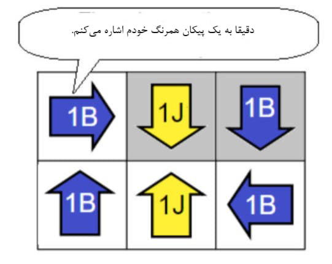
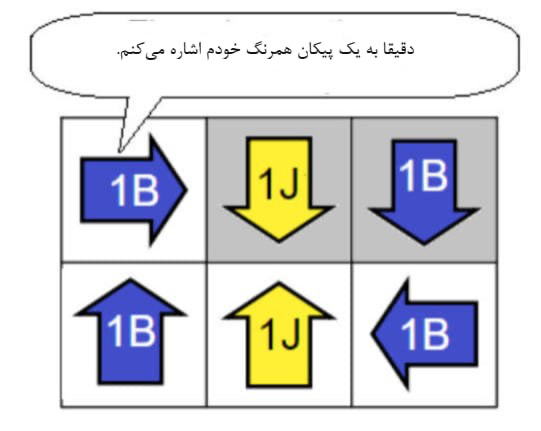

دوئل پیکانها
مثال


همهی پیکانها را با توجه به قانون گفته شده رنگ آمیزی کنید:
هر پیکان باید به یک و تنها یک پیکان همرنگ خود اشاره کند.
هر پیکان باید به یک و تنها یک پیکان |
|
همرنگ خود اشاره کند. |
برای تغییر رنگ هر پیکان بر روی آن کلیک کنید.
مثال